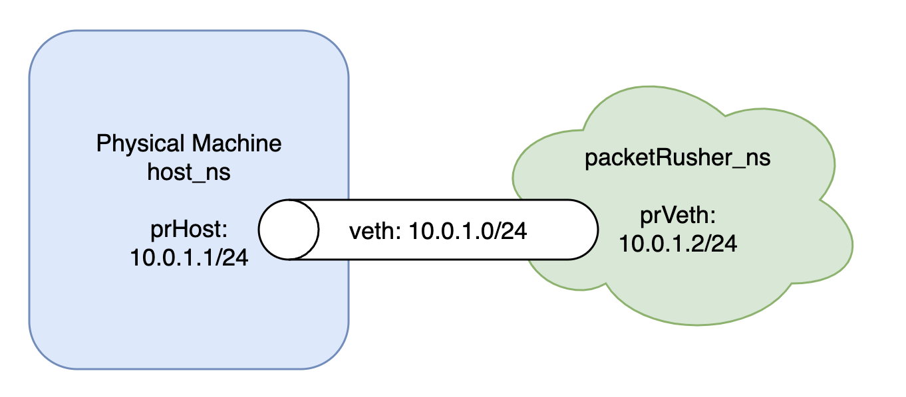
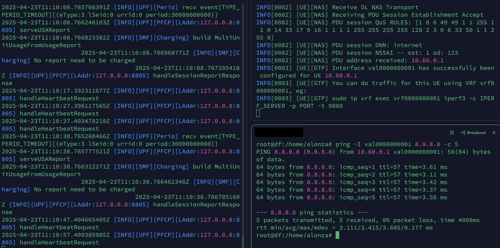

Namespace-Based GTP5G Conflict Resolution for free5GC and PacketRusher
Note
Author: Alonza Tu
Date: 2025/04/30
GTP5G Conflict Description
When deploying free5GC and PacketRusher(RAN/UE) on the same physical machine, one common challenge is the conflict over the GTP5G network device. Both components attempt to bind and operate on the same virtual interface, which leads to PDU session establishment failure.
To address this issue elegantly, we can leverage Linux network namespaces to isolate PacketRusher's network environment. In this blog post, we will walk through the process of setting up PacketRusher in a dedicated namespace, ensuring seamless coexistence with the free5GC core network on a single host.
Advantages with Network Namespace
As we know, free5GC provides a Docker Compose setup on GitHub, which allows deploying the core network along with RAN/UE components on the same machine. However, if we only want to test specific features or run components in debug mode, running the core network and RAN/UE directly on the host can be more convenient and flexible for development purposes.
Network Namespace Introduction
Network namespaces are a fundamental feature of the Linux kernel that provides isolation of network resources. Each namespace has its own network interfaces, routing tables, firewall rules, and network devices. This isolation ensures that processes in different namespaces cannot interfere with each other's network configurations, making it an ideal solution for our GTP5G conflict scenario.
For a deeper understanding of Linux network devices and their management, you can refer to our previous blog post on Network Devices in Linux.
Network Namespace Deployment
Architecture Overview

There will be an additional network namespace called packetRusher_ns, connected to the host network namespace via a veth pair( prHost < - > prVeth).
Setup Step by Step
- Linux Network Namespace
a. Create the target network namespace
Here we create a network namespace calledpacketRusher_ns.
sudo ip netns add packetRusher_ns 2>/dev/null || true
b. Create the veth pair
Here we create a veth pair with one side isprHostand the other side isprVeth.
sudo ip link add prHost type veth peer prVeth
c. Move veth peer to namespace
Now, we need to moveprVethintopacketRusher_ns.
sudo ip link set prVeth netns packetRusher_ns
d. Bring up the interfaces
After setting the veth pair, we need to bring them up in both host network namespace andpacketRusher_ns.
sudo ip link set prHost up sudo ip netns exec packetRusher_ns ip link set prVeth up
e. Configure IP addresses
Now we need to configure the specific IPs for bothprHostandprVeth.
The IP class is10.0.1.0/24in this example.
sudo ip addr add 10.0.1.1/24 dev prHost sudo ip netns exec packetRusher_ns ip addr add 10.0.1.2/24 dev prVeth
f. Configure routing inpacketRusher_ns
We have to makepacketRusher_nsknow where to route the traffic.
sudo ip netns exec packetRusher_ns ip route add default via 10.0.1.1 -
free5GC Core Network
For core network configuration and local running, please refer to: Build and Install free5GC
Make sure to modify AMF/SMF/UPF's configuration YAML file:-
~/free5gc/config/amfcfg.yaml
Replace ngapIpList IP from 127.0.0.1 to your host ip, not
prHost, namely from:ngapIpList: # the IP list of N2 interfaces on this AMF - 127.0.0.1into
ngapIpList: # the IP list of N2 interfaces on this AMF - <your host ip, not prHost> -
~/free5gc/config/smfcfg.yaml
In the entry inside
userplaneInformation / upNodes / UPF / interfaces / endpoints, change the IP from 127.0.0.8 to your host ip, notprHost, namely from:interfaces: # Interface list for this UPF - interfaceType: N3 # the type of the interface (N3 or N9) endpoints: # the IP address of this N3/N9 interface on this UPF - 127.0.0.8into
interfaces: # Interface list for this UPF - interfaceType: N3 # the type of the interface (N3 or N9) endpoints: # the IP address of this N3/N9 interface on this UPF - <your host ip, not prHost> -
~/free5gc/config/upfcfg.yaml
Change GTPU IP from 127.0.0.8 into your host ip, not
prHost, namely from:gtpu: forwarder: gtp5g # The IP list of the N3/N9 interfaces on this UPF # If there are multiple connection, set addr to 0.0.0.0 or list all the addresses ifList: - addr: 127.0.0.8 type: N3into
gtpu: forwarder: gtp5g # The IP list of the N3/N9 interfaces on this UPF # If there are multiple connection, set addr to 0.0.0.0 or list all the addresses ifList: - addr: <your host ip, not prHost> type: N3
-
-
PackerRusher
For PacketRusher setup, build, and local running, please refer to: PacketRusher: A new UE/gNB simulator and CP/UP load tester
Now, we're going to modify the configuration to make PacketRusher run inpacketRusher_ns:-
Modify IP field in
controlifanddataifinto theprVeth's IP, like:gnodeb: controlif: ip: "10.0.1.2" # prVeth's IP port: 9487 dataif: ip: "10.0.1.2" # prVeth's IP port: 2152 -
Also set the AMF's IP as your core network's AMF's IP(the
ngapIpListwe set in the previous part):amfif: - ip: <your host ip, not prHost>
-
-
Running
a. Start the core network in terminal-1:
./run.sh
b. Create a new subscriber via web console:
For creating subscriber, please refer to: Create Subscriber via Webconsolec. Get into the
packetRusher_nsin terminal-2 and terminal-3:
sudo ip netns exec packetRusher_ns bash
d. Start up the PacketRusher in terminal-2:
./PacketRusher/packetrusher ue
e. Data plane test in terminal-3:
ping -I val0000000001 8.8.8.8
f. ExitpacketRusher_ns
exit -
Demo Result:

- Left part is core network.
- Right part is PacketRusher and the
pingtest.
-
Clean the
packerRusher_ns
a. Bring down interface
sudo ip link set prHost down 2>/dev/null || true
b. Delete veth pair
sudo ip link delete prHost 2>/dev/null || true
c. Delete network namespace
sudo ip netns delete packetRusher_ns 2>/dev/null || true
Conclusion
In this blog post, we explored a practical solution to resolve the GTP5G device conflict between free5GC and PacketRusher using Linux network namespaces. By isolating PacketRusher in a dedicated network namespace (packetRusher_ns), we successfully achieved the coexistence of both components on a single machine.
This approach not only resolves the conflict but also provides better network isolation and management. The step-by-step guide and configuration examples provided should help developers set up their testing environment more efficiently, enabling smoother development and testing of core network functionalities.
Reference
- PacketRusher
- Network Devices in Linux
- PacketRusher: A new UE/gNB simulator and CP/UP load tester
- Build and Install free5GC
- Installing a UE/RAN Simulator
- Create Subscriber via Webconsole
About me
Hi, I'm Alonza, a core network developer currently contributing to the free5GC project. I'm passionate about exploring cutting-edge 5G technologies, with a recent focus on tunnel handling and its role in shaping next-generation connectivity. If you're also interested and have ideas to share, don't hesitate—reach out to me!
Connect with me
- GitHub: https://github.com/Alonza0314
- Website: Alonza0314
- LinkedIn: Alonza Tu